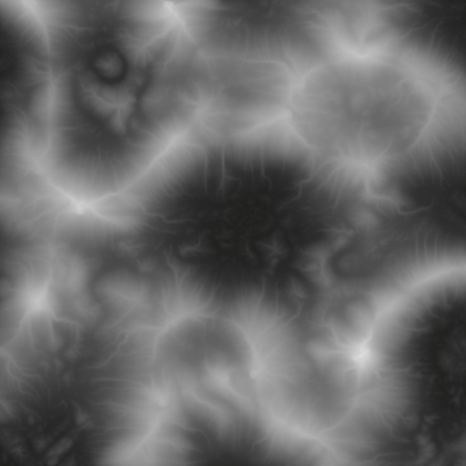
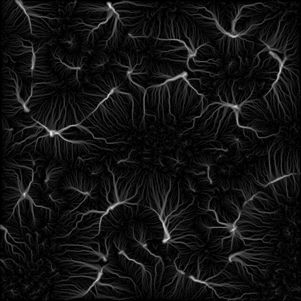
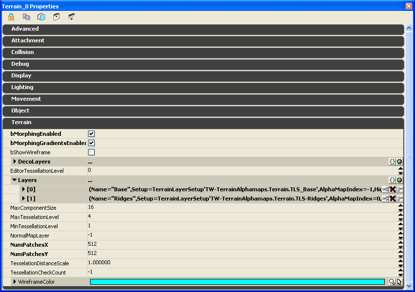

UDN
Search public documentation:
TerrainAlphamapsKR
English Translation
?�本語訳
�?��翻译
Interested in the Unreal Engine?
Visit the Unreal Technology site.
Looking for jobs and company info?
Check out the Epic games site.
Questions about support via UDN?
Contact the UDN Staff
?�本語訳
�?��翻译
Interested in the Unreal Engine?
Visit the Unreal Technology site.
Looking for jobs and company info?
Check out the Epic games site.
Questions about support via UDN?
Contact the UDN Staff
UE3 ??/a> > ?�레???�스??/a> > ?�레???�파�? ?��??�서 만든 ?�스�??�이???�파�??�용?�기
?�레???�파�? ?��??�서 만든 ?�스�??�이???�파�??�용?�기
문서 변경내?? David Green ?��?.
개요
?�파�?개요
 �??�파맵의 ?��? 값�? ?�레?�에???�등???��? 버텍?�에 ?�용?�는 ?�스처의 불투�?블렌??비율??결정?�니?? 1 : 1 ?�??블렌??값을 ?�공?�기 ?�해 ?�파맵과 ?�이?�맵???�상?�는 반드???�일?�야 ?�는 ?�유?????�문?�니??
?�진???�레???�라?�앵글???�더링하??경우 ?�이???�파맵의 �??�과 ?�을 차�?�??�어 ?�이?�맵 �?버텍?�의 �??�스처에 ?�??블렌??값을 가?�옵?�다.
?�파�?값이 0(Black) ?�면 �?버텍?�에???�스�?블렌?��? 발생?��? ?�고, 127(Gray) ??경우 50 % ???�스�?블렌?? 255(White) ??경우 100 % ?�스�?블렌?��? ?�당 버텍?�에??발생?�니??
�??�파맵의 ?��? 값�? ?�레?�에???�등???��? 버텍?�에 ?�용?�는 ?�스처의 불투�?블렌??비율??결정?�니?? 1 : 1 ?�??블렌??값을 ?�공?�기 ?�해 ?�파맵과 ?�이?�맵???�상?�는 반드???�일?�야 ?�는 ?�유?????�문?�니??
?�진???�레???�라?�앵글???�더링하??경우 ?�이???�파맵의 �??�과 ?�을 차�?�??�어 ?�이?�맵 �?버텍?�의 �??�스처에 ?�??블렌??값을 가?�옵?�다.
?�파�?값이 0(Black) ?�면 �?버텍?�에???�스�?블렌?��? 발생?��? ?�고, 127(Gray) ??경우 50 % ???�스�?블렌?? 255(White) ??경우 100 % ?�스�?블렌?��? ?�당 버텍?�에??발생?�니??
 ?�레??메시 버텍???�이?�서 발생?�는 ?�스�?블렌?��? ?�형 그레?�언?�이�?급격??변?�하지 ?�습?�다. �? ?�스�??�이?�는 ?�래???�스�?버텍?�에??버텍?�로 매끄?�게 블렌?�됩?�다. ???�의 ?�레???�라?�앵글(?�각?????�제 ?��?지?�서 �????�듯??맨위 ?�쪽???�레??버텍?�는 ?�전??백색???�응?�는 ?�파�?�?(255) ??가�?반면 ?�른 2 개의 ?�라?�앵글??버텍?�는 ?�전??검?�색???�응?�는 ?�파�?�?(0) ??가졌습?�다. ???�스�??�이?�는 버텍?�에?��???버텍?�까지??그레?�언?�처???�레???�라?�앵글???�면??걸쳐 부?�럽�?블렌?�됩?�다. ???�제?�서, ?�래???�스처는 ?��??�이�??�이?�된 ?�스처는 ?��??�이므�??��????�파�?값�? 100 % ?��??�과 검?�색 ?�파�?값을 100 % ?��??�으�??�더?�니?? ?�라?�앵글???�면?� ??�� ?��??�에???��??�으�?매끄?�운 그레?�언?��? 보여줍니??
?�레??메시 버텍???�이?�서 발생?�는 ?�스�?블렌?��? ?�형 그레?�언?�이�?급격??변?�하지 ?�습?�다. �? ?�스�??�이?�는 ?�래???�스�?버텍?�에??버텍?�로 매끄?�게 블렌?�됩?�다. ???�의 ?�레???�라?�앵글(?�각?????�제 ?��?지?�서 �????�듯??맨위 ?�쪽???�레??버텍?�는 ?�전??백색???�응?�는 ?�파�?�?(255) ??가�?반면 ?�른 2 개의 ?�라?�앵글??버텍?�는 ?�전??검?�색???�응?�는 ?�파�?�?(0) ??가졌습?�다. ???�스�??�이?�는 버텍?�에?��???버텍?�까지??그레?�언?�처???�레???�라?�앵글???�면??걸쳐 부?�럽�?블렌?�됩?�다. ???�제?�서, ?�래???�스처는 ?��??�이�??�이?�된 ?�스처는 ?��??�이므�??��????�파�?값�? 100 % ?��??�과 검?�색 ?�파�?값을 100 % ?��??�으�??�더?�니?? ?�라?�앵글???�면?� ??�� ?��??�에???��??�으�?매끄?�운 그레?�언?��? 보여줍니??
 Unreal Engine 3???�레???�스?�에???�이?�맵 ?�는 ?�파�?모두 Generic Browser? ?�서 보이지 ?�습?�다. ?�것?� ?�전 ?�진 버전과의 ?�른 ?�입?�다.
Unreal Engine 3???�레???�스?�에???�이?�맵 ?�는 ?�파�?모두 Generic Browser? ?�서 보이지 ?�습?�다. ?�것?� ?�전 ?�진 버전과의 ?�른 ?�입?�다.
?�레???�이???�정
 TerrainLayerSetup ?�서 ?�러 ??��??존재?�는 경우 그들?� ??방향?�로 ?�이?�되???�스�??�이?��? ?�래?�서(가???��? ??�� 번호) ????�� 번호 [0])�??�더링됩?�다. ?�의 TerrainLayerSetup???�제?�서 ??�� [0] ????�� [1] ???�에 ?�더링됩?�다.
?�차??TerrainLayerSetup ?� ?��?(?�이???�한), ?�벽�?기울기에 ?�한), ????�� ???�상(?�이???�한)???�???�이?�링 ?��??�을 ?�레?�에 ?�게 ?�공?????�습?�다. 그러?????�선 ?�는 ?�천???�한 ?�단�?같�? 복잡??지질적 ?�스�??�이?�링??만들 ?�는 ?�습?�다. ?�한 지�??�스?�의 ?�이?� 기울기�? ?�역??걸쳐 ?�라�????�는 구불구불???�천�??�로???�???�스�??�이?��? 만들 ???�습?�다. ?�러??복잡???�스�??�이?�의 ?�형???�?�서??UnrealEd ?�서 ?�동?�로 ?�이?��? ?�인?�하거나 ?��??�서 ?�작???�파�??�일???�용?�는 것이 좋습?�다.
?�스�??�이?��? ?�으�??�이?�하거나 ?��? ?�파맵을 ?�이?�로 가?�오기할 경우 TerrainLayerSetup ?� 반드???�일 ?�이???��??�이?�야 ?�니?? ?�차???�중 ?�이???��??��? 가?�하지 ?�습?�다.
???�선(?�문 ?�어로는 Dendritic (모수 분기?�는 ?�태)???�선�?Stratigraphic (층서?�의) ?�선)?� ?�화 ?�용???�출??비침?�된 ?�단???�석?�니?? ?�천???�한 ?�단?� ?�간???�르??�?같�? 물줄�?침식???�해 발생?�니?? ???�토리얼?�서 ?�용?�는 ?�레???�파�??�제?�서???�스처링???�성 지질적 ?�형???�시?�니??
TerrainLayerSetup ?�서 ?�러 ??��??존재?�는 경우 그들?� ??방향?�로 ?�이?�되???�스�??�이?��? ?�래?�서(가???��? ??�� 번호) ????�� 번호 [0])�??�더링됩?�다. ?�의 TerrainLayerSetup???�제?�서 ??�� [0] ????�� [1] ???�에 ?�더링됩?�다.
?�차??TerrainLayerSetup ?� ?��?(?�이???�한), ?�벽�?기울기에 ?�한), ????�� ???�상(?�이???�한)???�???�이?�링 ?��??�을 ?�레?�에 ?�게 ?�공?????�습?�다. 그러?????�선 ?�는 ?�천???�한 ?�단�?같�? 복잡??지질적 ?�스�??�이?�링??만들 ?�는 ?�습?�다. ?�한 지�??�스?�의 ?�이?� 기울기�? ?�역??걸쳐 ?�라�????�는 구불구불???�천�??�로???�???�스�??�이?��? 만들 ???�습?�다. ?�러??복잡???�스�??�이?�의 ?�형???�?�서??UnrealEd ?�서 ?�동?�로 ?�이?��? ?�인?�하거나 ?��??�서 ?�작???�파�??�일???�용?�는 것이 좋습?�다.
?�스�??�이?��? ?�으�??�이?�하거나 ?��? ?�파맵을 ?�이?�로 가?�오기할 경우 TerrainLayerSetup ?� 반드???�일 ?�이???��??�이?�야 ?�니?? ?�차???�중 ?�이???��??��? 가?�하지 ?�습?�다.
???�선(?�문 ?�어로는 Dendritic (모수 분기?�는 ?�태)???�선�?Stratigraphic (층서?�의) ?�선)?� ?�화 ?�용???�출??비침?�된 ?�단???�석?�니?? ?�천???�한 ?�단?� ?�간???�르??�?같�? 물줄�?침식???�해 발생?�니?? ???�토리얼?�서 ?�용?�는 ?�레???�파�??�제?�서???�스처링???�성 지질적 ?�형???�시?�니??
?��? ?�파�??�작?�기
?��? ?�파�??�식
?��? ?�파맵을 ?�용???�레???�제

?�용??지??"?�선" ?�파맵�? ?�이?�맵�??�께 ?�고리즘?�으�??�작?�었�?Raw-16 ?�로 ?�?�된 ?�음, ?�인???�프?�웨?�에???�집?????�도�?16 비트 ?�색�?TIF �?변?�되?�습?�다. ?�음???�래??Raw-16 ?�파맵입?�다.
TIF-16 ?�파 맵�? ?�중 ?�스??Intensity ?� Contrast ??조합???�용?�여 밝기??곡선 ?�벨??증�??�키�??�해 ?�인???�프?�웨?�로 ?�정?��?�? 그런 ?�음 TIF-16 ?�로 ?�시 ?�?�되?�고, 마�?막으�?UnrealEd �?가?�오기할 ???�게 ?�시 ??�?G16 ?�로 변?�하?�?�니?? UE3 ??UnrealEd ???�전 Unreal Engine 버전 보다 ???��? ?�비�? ?�요�??��?�??�파맵�? Unreal Engine 2 ?�는 2.5 ?�서 만든 �?보다 ??강렬???�요가 ?�습?�다. 최종 TIF-16 ?� ?�음�?같습?�다.
?��? ?�파맵을 ?�용?�여 ?�제 ?�레???�작?�기

8. ?�레???�집 ?�???�자가 ?�시?�게 ?�려�?Terrain Edit 모드�??�동?�십?�오. Import/Export 그룹?�서 "Height Map Only" ?� "Into Current" 체크 ?�자�??�택?�여 ?�이???�택?�로 가?�오�??�도�??�니?? Class ?�롭 ?�운 콤보 ?�자?�서 가?�오기할 "G16BMPT3D" �??�택?�니?? ?�것??가?�오기할 G16 .bmp ?�니?? ?�용??지???�파맵을 받기 ?�해 ?�선???�??TerrainLayerSetup ???�택?�고(?�???�자?�서 ?��????�택 ?�상?�로 ?�시??, Import 버튼???�택?�니?? ?�일 ?�???�자?�서 ?��? G16 ?�파�??�일???�치�??�동?�고 ?�것???�니?? ?�파�??�일???�못???�일 ?�식 ?�는 ?�일 ?�기?� 같�? 문제가 ?�으�??�파맵�? ?�레???�정?�로 로드?�고 ?�택???�이?�에 ?�용?�니?? "Recache Terrain Materials" 버튼???�릭?�여 뷰포?�에???�레?�을 ?�데?�트?�니?? �??�제?�서 Base TerrainLayerSetup ?� ?�이콘에 ???�기??"P" �??�시?�었??�� ?�과 ?�???�중 ?�이???�차???�정?�고 ?�파맵이 가?�오기된 Ridges TerrainLayerSetup ?� �??�래???�치?�니?? UnrealEd ?�서 Build All ???�택???? 최종 ?�레?��? ?�음�?같습?�다. 바위 지???�선?�로 ?�어?�는 것을 보실 ???�습?�다.
UnrealEd ?�서 Build All ???�택???? 최종 ?�레?��? ?�음�?같습?�다. 바위 지???�선?�로 ?�어?�는 것을 보실 ???�습?�다.